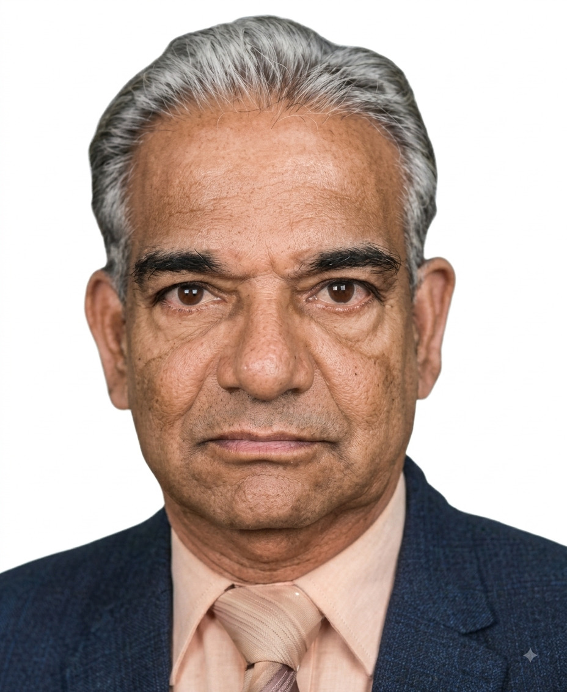

Profile at a Glance
Qualification
B.V.Sc., M.S., Ph.D.
Position
Former Dean,
Madras Veterinary College
Area of Contribution
Poultry Science
Dr. P. Kothandaraman
B.V.Sc., M.S., Ph.D.
Former Dean
Madras Veterinary College
Early Life and Veterinary Education
Dr. P. Kothandaraman was born on 15 January 1930 in Poonamallee, Thiruvallur District, Tamil Nadu.
He graduated from Madras Veterinary College and subsequently pursued advanced studies in the United States.
He obtained his Master of Science in Poultry Production from the University of Tennessee, USA, in 1968.
He later earned his Ph.D. from the University of Madras in 1972.
From Field Service to Academia
Dr. Kothandaraman began his professional career as a Veterinary Assistant Surgeon in the Department of Animal Husbandry, Government of Tamil Nadu.
He subsequently moved into academia, where his career became closely associated with the development of Poultry Science education and research at Madras Veterinary College.
Pioneer of the Department of Poultry Science
When the Department of Poultry Science was established at Madras Veterinary College in 1973, Dr. Kothandaraman became its first Professor and Head.
He continued in this position until 1983.
His leadership during this formative decade contributed substantially to establishing Poultry Science as a specialised academic, research and extension discipline.
First Director of the Institute of Animal Nutrition
Dr. Kothandaraman subsequently became the first Director of the Institute of Animal Nutrition established at Kattupakkam.
His association with the newly established Institute reflected the breadth of his academic interests and his contribution to institution building beyond Poultry Science.
A Student-Friendly Dean
Dr. Kothandaraman served as Dean of Madras Veterinary College from 1983 to 1988.
During his tenure, he became particularly popular among students and was remembered as a student-friendly Dean.
His approachable manner, academic experience and affection for students helped create a positive relationship between the administration and the student community.
Research Leadership
In addition to his responsibilities at Madras Veterinary College, Dr. Kothandaraman also served as Director of Research (in-charge) at Tamil Nadu Agricultural University.
He eventually retired from service in 1988.
A Distinguished and Affectionate Mentor
Dr. Kothandaraman was remembered as a distinguished and affectionate mentor.
He was known for his exemplary fluency in English and his deep analytical approach to academic and scientific issues.
These qualities made him an effective teacher, research guide and academic leader.
Contribution to the Growth of Poultry Science
His contributions extended beyond classroom teaching and laboratory research.
During the early stages of growth of the poultry industry in Tamil Nadu, he facilitated the establishment of Poultry Research and Development Centres under Tamil Nadu Agricultural University.
These centres were subsequently christened University Training and Research Centres (UTRCs).
Through these initiatives, academic expertise could reach the field and contribute to the development of the poultry sector.
Contribution Beyond Poultry Science
Although Poultry Science remained his principal field of specialisation, Dr. Kothandaraman's contributions extended to the broader areas of Animal Husbandry and Veterinary Science.
His career brought together teaching, research, extension, institutional development and academic administration.
Mentor to a Generation of Researchers
Over the course of his academic career, Dr. Kothandaraman guided 13 Ph.D. scholars and 14 M.V.Sc. students.
Through this substantial postgraduate mentorship, he left a lasting impact on veterinary education and research.
Many of his research scholars subsequently made significant contributions to the development of TANUVAS and its constituent institutions.
Mentoring Future Vice-Chancellors
Among his distinguished Ph.D. students were Dr. V. Gnanaprakasam and Dr. S. Shanmuga Sundaram, both of whom later served as Vice-Chancellors.
Their subsequent leadership illustrates the far-reaching influence of Dr. Kothandaraman's mentorship on veterinary education and institutional development.
An Enduring Legacy
Dr. P. Kothandaraman is remembered as a pioneer in Poultry Science, an institution builder, an accomplished academic administrator and, above all, an affectionate mentor.
His pioneering leadership of the Department of Poultry Science, his role in the Institute of Animal Nutrition, his stewardship of Madras Veterinary College and his guidance of generations of postgraduate scholars constitute an enduring academic legacy.
Dr. Kothandaraman passed away on 8 January 2014.
He is remembered fondly by his daughter, Mrs. K. Lakshmi, together with cherished memories of his late son, Mr. K. Raghuraman.
Reminiscence compiled by Dr. R. Prabakaran, Former Vice-Chancellor, TANUVAS.
Audio narration will be added here when available.
Additional historical photographs will be added here.